Rundvlees
Botermals, en de inkoop houden we zelf in de hand. Zo weet u dat u altijd een veilig en vertrouwd stukje rundvlees koopt.
Keurslager in Laren
Vlees van vee uit de omgeving, in eigen bedrijf geslacht. Worst, vleeswaren en maaltijden maken we bijna allemaal zelf. Kom langs, dan laten we u graag iets proeven.
4,8 van 5 op Google, uit 38 reviews
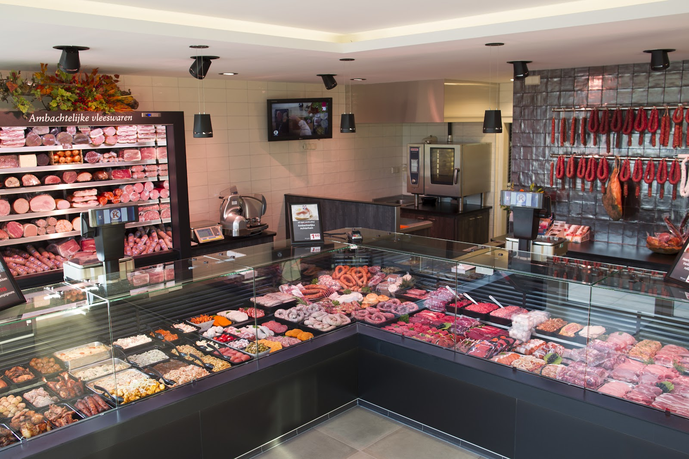
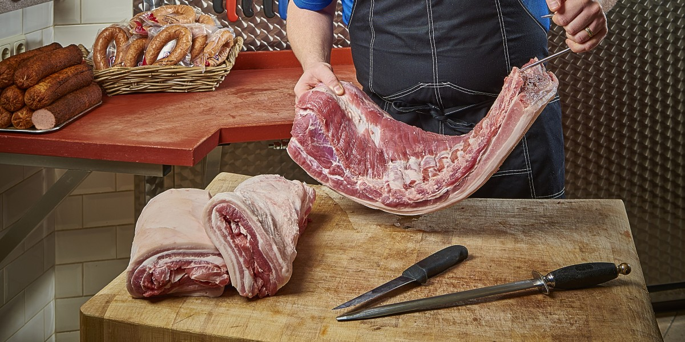
Het vlees voor onze worst, specialiteiten en maaltijden komt van vee uit de omgeving en wordt in ons eigen bedrijf geslacht. Zo streven we naar de hoogst mogelijke kwaliteit. En dat proeft u.
Ook de inkoop van ons rundvlees houden we graag in eigen hand. Dat vlees voldoet aan speciale eisen voor afkomst, voeding, gezondheid en welzijn.
Er bestaat geen mooier vak dan het slagersvak.
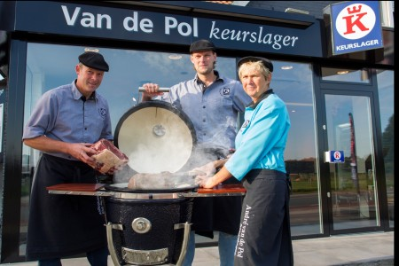
Onze vleeswaren komen dagvers uit eigen keuken, met verse ingrediënten en een eigen melange van specerijen. Dit is een kleine greep. We kunnen nog heel lang doorgaan.
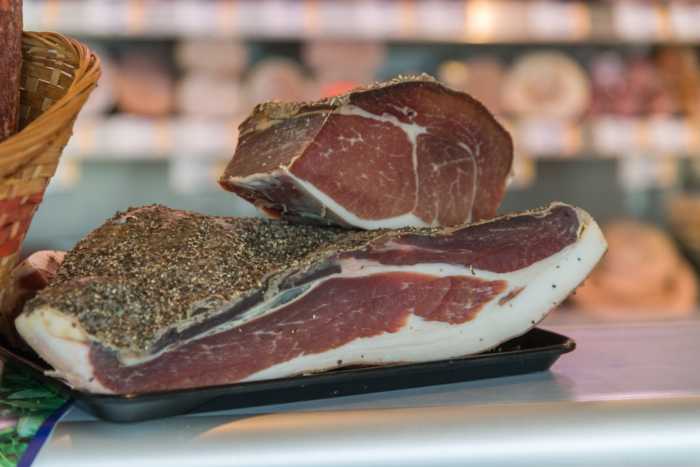
“Een goeie slager, zoals het hoort ze zijn er nog. Plakje worst voor de kinderen en mooi producten voor een redelijke prijs”
“Altijd een topbeleving bij Keurslagerij Van de Pol. De kwaliteit van het vlees is consistent hoog en je proeft duidelijk dat hier vakmanschap en passie samenkomen. Of het nu gaat om een mooi stuk vlees voor het weekend, verse worst of kant-en-klare specialiteiten: alles is verzorgd, vers en smaakvol.”
“Lekker eten, goede vriendelijke service. Heerlijke grilworst en zuurkool (beide Kant en klaar en uit vat). Zou er met plezier naar toe gaan.”
“Heerlijk bbq vlees.Zeer vriendelijk personeel.Verzorgde uitstraling winkel.”
“Heerlijk BBQ vlees, vriendelijke bediening!”
Gemiddeld 4,8 van 5 sterren op Google, uit 38 reviews.
Met ons ruime aanbod kookt u elke dag iets anders. Geen inspiratie? We helpen u graag, en ons magazine Proef neemt u gratis mee.
Botermals, en de inkoop houden we zelf in de hand. Zo weet u dat u altijd een veilig en vertrouwd stukje rundvlees koopt.
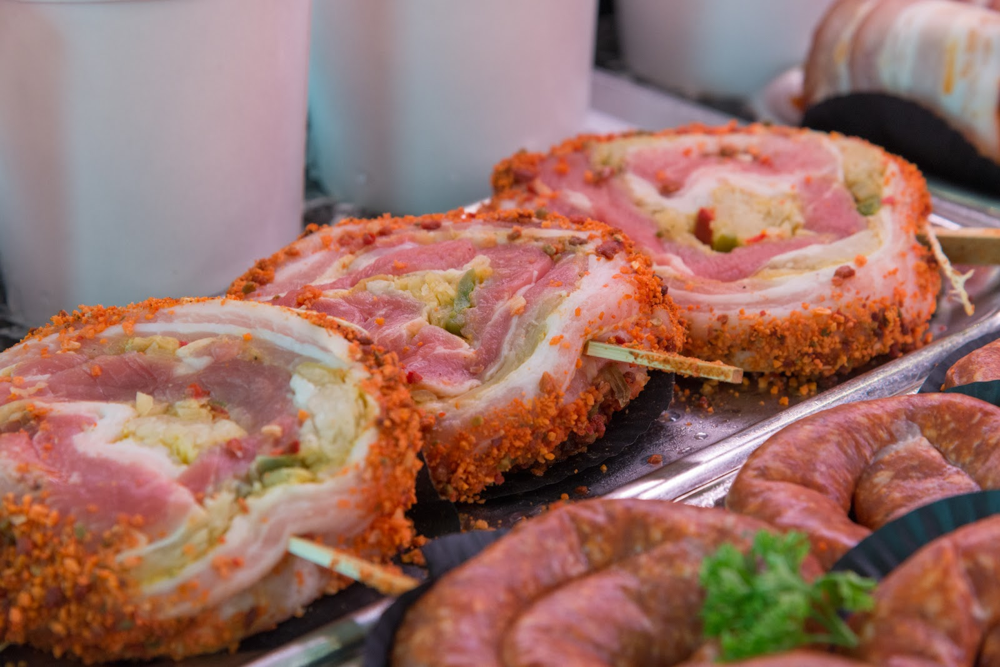
Mals, met een fijne smaak en een laag vetgehalte. Lekker met zachte, lichte sauzen en kruiden, en het staat snel op tafel.
Sappig en neutraal van smaak, dus makkelijk te combineren met kruiden en groenten. Zo zet u elke dag iets anders op tafel.
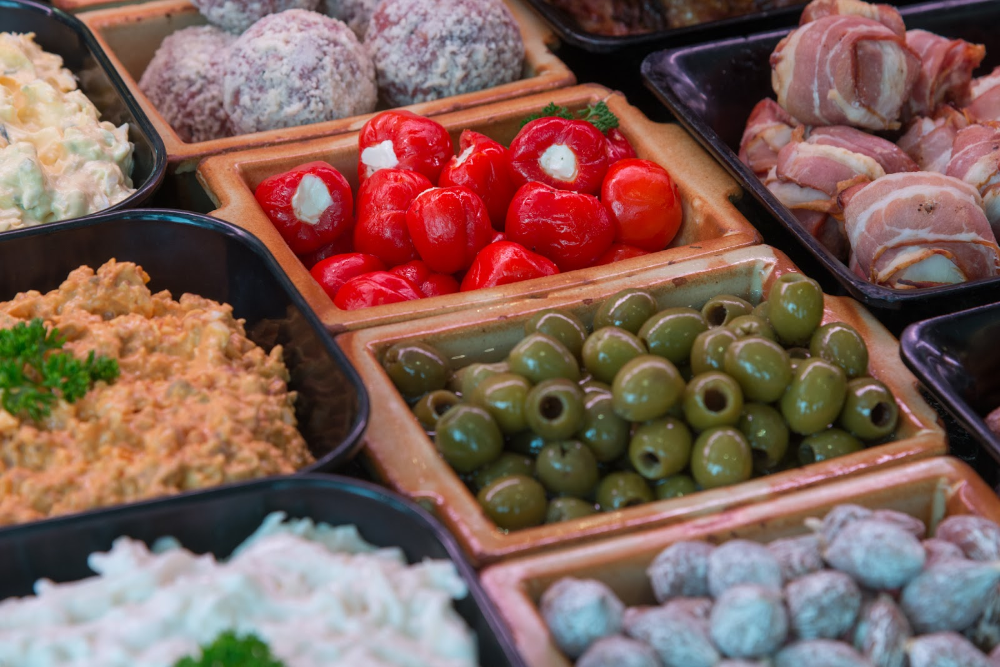
Filet, kipkarbonades, kalkoenhaas of schnitzels: veelzijdig en snel klaar. Geen zin om te koken? We hebben ook kipdelen die al gegrild zijn.
Mager, met een mooie eigen smaak. Grillen, braden of stoven, met tijm, marjolein of oregano. Ook eenvoudig klaargemaakt is het heerlijk.
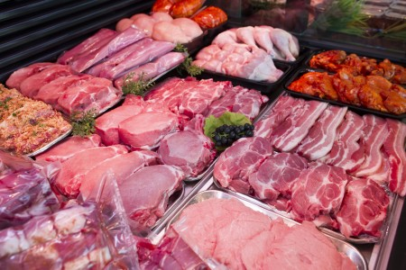
Barbecue, gourmet, buffet of catering: bel ons of loop even binnen, dan kijken we samen wat er past.
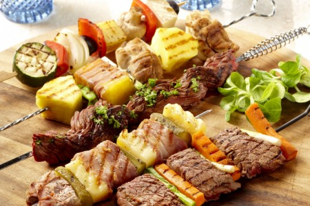
“Heerlijk bbq vlees”, schrijven onze klanten. Kom gerust kijken wat er ligt voor op de grill.
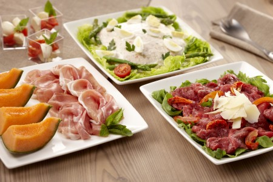
Feestje? Met onze buffetten is er voor ieder wat wils.
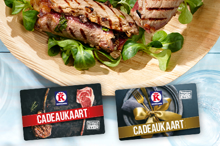
Te koop en te verzilveren bij elke Keurslager in Nederland, dus ook bij ons. De waarde bepaalt u zelf.
U herkent ons aan de puntgevels aan de Deventerweg.
Deventerweg 33| maandag | 08:00 - 18:00 |
|---|---|
| dinsdag | 08:00 - 18:00 |
| woensdag | 08:00 - 18:00 |
| donderdag | 08:00 - 18:00 |
| vrijdag | 08:00 - 18:00 |
| zaterdag | 08:00 - 16:00 |
| zondag | gesloten |
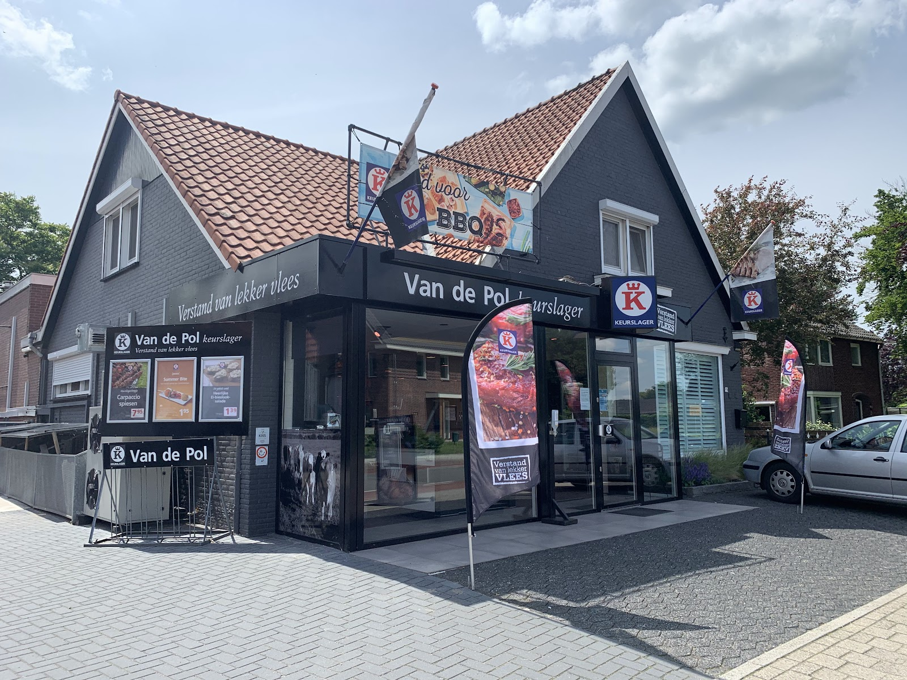